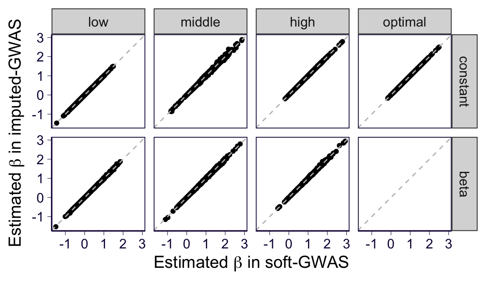

For paper: simulation for the GWAS approahes
Last update: Jun 19, 2020
\[ \newcommand{\E}{\text{E}} \newcommand{\diag}{\text{diag}} \]
rm(list = ls())
library(ggplot2)
library(dplyr)
theme_set(theme_bw(base_size=15))
set.seed(2020)
# load some gists
source('https://gist.githubusercontent.com/liangyy/43912b3ecab5d10c89f9d4b2669871c9/raw/3ca651cfa53ffccb8422f432561138a46e93710f/my_ggplot_theme.R')1 Simulation procedure
- Simulate haplotype \(H^1\) and \(H^2\) from Bernoulli where MAF is sampled from \(U[0.05, 0.45]\).
- Simulate phenotype \(y = H^1 \beta + \epsilon\) with \(\beta\) is set to 0 or 1 and per-SNP heritability 0.001 when \(\beta = 1\).
- Simulate \(\gamma\) from a variaty of distribution:
- Constant: \(\gamma = 0.9\), \(\gamma = 0.1\), and \(\gamma = 0.5\)
- Beta distribution: Beta(5, 2), Beta(2, 5), and Beta(2, 2)
Sample size 5,000 and simulate 500 phenotype-genotype pairs for each setting.
2 Run simulation
sample_size = 5000
nrepeat = 500
maf_range = c(0.05, 0.45)
per_snp_h2 = 0.001
gamma_types = c('high', 'low', 'middle')
gamma_constants = data.frame(const = c(0.9, 0.1, 0.5), name = gamma_types, stringsAsFactors = F)
gamma_betas = data.frame(a = c(5, 2, 2), b = c(2, 5, 2), name = gamma_types, stringsAsFactors = F)
# functions
.sim_one_snp = function(maf, nindiv) {
as.numeric(runif(nindiv) < maf)
}
simulate_half_genotype = function(maf, nsnp, nindiv) {
sapply(maf, .sim_one_snp, nindiv = nindiv)
}
y_from_g = function(g_mat, h2) {
var_g = apply(g_mat, 2, var)
var_e = (1 - h2) / h2 * var_g
error = sapply(var_e, function(x) {
rnorm(nrow(g_mat), sd = sqrt(x))
})
g_mat + error
}
maf = runif(nrepeat, maf_range[1], maf_range[2])
h1 = simulate_half_genotype(maf, nsnp, sample_size)
h2 = simulate_half_genotype(maf, nsnp, sample_size)
y_alt = y_from_g(h1, per_snp_h2)
y_null = matrix(rnorm(sample_size * nrepeat), ncol = nrepeat, nrow = sample_size)
gamma_list = list()
gamma_list$constant = list()
for(cc in 1 : nrow(gamma_constants)) {
gamma_list$constant[[gamma_constants$name[cc]]] = matrix(gamma_constants$const[cc], ncol = nrepeat, nrow = sample_size)
}
gamma_list$constant[['optimal']] = matrix(1, ncol = nrepeat, nrow = sample_size)
gamma_list$beta = list()
for(cc in 1 : nrow(gamma_betas)) {
gamma_list$beta[[gamma_betas$name[cc]]] = matrix(rep(rbeta(sample_size, gamma_betas$a[cc], gamma_betas$b[cc]), nrepeat), ncol = nrepeat, nrow = sample_size, byrow = FALSE)
}3 Run GWAS
Before running GWAS, we first have some code set up to compute \(\bar{r}\) and \(\bar{S}\).
calc_r = function(zmat) {
apply(zmat, 2, mean)
}
calc_s = function(zmat) {
apply(zmat, 2, function(x) {
mean(x ^ 2 + (1 - x) ^ 2)
})
}source('../code/rlib_soft_gwas.R')
source('../code/rlib_imputed_gwas.R')
df_gwas = list()
for(gamma_type in names(gamma_list)) {
for(gg in names(gamma_list[[gamma_type]])) {
message('On gamma distr = ', gamma_type, ' and gamma type = ', gg)
gamma_ = gamma_list[[gamma_type]][[gg]]
mean_r = calc_r(gamma_)
mean_s = calc_s(gamma_)
# run soft-gwas
## on alternative
o_soft = soft_gwas(y_alt, h1, h2, gamma_)
df_gwas[[length(df_gwas) + 1]] = data.frame(y_type = 'alt', gamma_dist = gamma_type, gamma_type = gg, method = 'soft-GWAS', bhat = o_soft$bhat, se = o_soft$bhat_se, mean_r = mean_r, mean_s = mean_s, idx = 1 : ncol(y_alt), stringsAsFactors = F)
## on null
o_soft = soft_gwas(y_null, h1, h2, gamma_)
df_gwas[[length(df_gwas) + 1]] = data.frame(y_type = 'null', gamma_dist = gamma_type, gamma_type = gg, method = 'soft-GWAS', bhat = o_soft$bhat, se = o_soft$bhat_se, mean_r = mean_r, mean_s = mean_s, idx = 1 : ncol(y_null), stringsAsFactors = F)
# run imputed-gwas on alternative
## on alternative
o_imputed = imputed_gwas(y_alt, h1, h2, gamma_)
df_gwas[[length(df_gwas) + 1]] = data.frame(y_type = 'alt', gamma_dist = gamma_type, gamma_type = gg, method = 'imputed-GWAS', bhat = o_imputed$bhat, se = o_imputed$bhat_se, mean_r = mean_r, mean_s = mean_s, idx = 1 : ncol(y_alt), stringsAsFactors = F)
## on null
o_imputed = imputed_gwas(y_null, h1, h2, gamma_)
df_gwas[[length(df_gwas) + 1]] = data.frame(y_type = 'null', gamma_dist = gamma_type, gamma_type = gg, method = 'imputed-GWAS', bhat = o_imputed$bhat, se = o_imputed$bhat_se, mean_r = mean_r, mean_s = mean_s, idx = 1 : ncol(y_null), stringsAsFactors = F)
}
}## On gamma distr = constant and gamma type = high## On gamma distr = constant and gamma type = low## On gamma distr = constant and gamma type = middle## On gamma distr = constant and gamma type = optimal## On gamma distr = beta and gamma type = high## On gamma distr = beta and gamma type = low## On gamma distr = beta and gamma type = middledf_gwas = do.call(rbind, df_gwas)
df_gwas = df_gwas %>% mutate(pval = pnorm(abs(bhat / se), lower.tail = F) * 2, test_stat = bhat / se)
df_gwas = df_gwas %>% group_by(y_type, gamma_dist, gamma_type, method) %>% mutate(p_expected = rank(pval) / (1 + n())) %>% ungroup()
df_gwas$method = factor(df_gwas$method, levels = c('soft-GWAS', 'imputed-GWAS'))
df_gwas$gamma_type = factor(df_gwas$gamma_type, levels = c('low', 'middle', 'high', 'optimal'))
df_gwas$gamma_dist = factor(df_gwas$gamma_dist, levels = c('constant', 'beta'))
df_gwas$y_type = factor(df_gwas$y_type, levels = c('null', 'alt'))
df_stat = df_gwas %>% filter(y_type == 'alt') %>% group_by(y_type, gamma_dist, gamma_type, method) %>% summarize(power = unique(mean_r) / unique(sqrt(mean_s)), bias = unique(mean_r) / unique(mean_s))4 Visualization
4.1 QQ plot under the null
p = df_gwas %>% filter(y_type == 'null') %>% ggplot() + geom_point(aes(x = -log(p_expected), y = -log(pval), color = gamma_type)) + facet_grid(gamma_dist~method) + geom_abline(intercept = 0, slope = 1, color = 'black', linetype = 2) + th2 + coord_equal() + theme(legend.title = element_blank(), legend.position = 'right') + xlab(expression(-log(p[expected]))) + ylab(expression(-log(p[observed]))) ;p
ggsave('../analysis_output/paper_simulation_gwas_qqplot.png', p, width = 5, height = 4)4.2 Effect size under the alternative
p = df_gwas %>% filter(y_type == 'alt') %>% ggplot() +
geom_violin(aes(x = gamma_type, y = bhat), position = position_dodge(width = 0.5)) +
geom_boxplot(aes(x = gamma_type, y = bhat), position = position_dodge(width = 0.5), width = 0.3) +
facet_grid(gamma_dist~method) +
geom_point(data = df_stat, aes(x = gamma_type, y = bias), shape = 4, color = 'red', size = 3) +
th2 +
xlab(expression(paste('Type of ', gamma))) +
ylab(expression(paste('Estimated ', beta))); p
ggsave('../analysis_output/paper_simulation_gwas_bhat.png', p, width = 5, height = 4)4.3 Test statistic
df_opt = df_gwas %>% filter(y_type == 'alt', gamma_type == 'optimal')
df_power = df_gwas %>% filter(y_type == 'alt', gamma_type != 'optimal') %>% left_join(df_opt %>% select(y_type, method, idx, test_stat), by = c('y_type', 'method', 'idx'), suffix = c('', '.optimal')) %>% mutate(test_stat_ratio = test_stat / test_stat.optimal)
p = df_power %>% ggplot() +
geom_violin(aes(x = gamma_type, y = test_stat_ratio), position = position_dodge(width = 0.5), scale = 'width') +
geom_boxplot(aes(x = gamma_type, y = test_stat_ratio), position = position_dodge(width = 0.5), width = 0.3) +
facet_grid(gamma_dist~method) +
geom_point(data = df_stat %>% filter(gamma_type != 'optimal'), aes(x = gamma_type, y = power), shape = 4, color = 'red', size = 3) +
th2 +
ylim(c(-5, 5)) +
xlab(expression(paste('Type of ', gamma))) +
ylab(expression(paste('Ratio of test statistic ', T / T^"*"))); p## Warning: Removed 68 rows containing non-finite values (stat_ydensity).## Warning: Removed 68 rows containing non-finite values (stat_boxplot).
ggsave('../analysis_output/paper_simulation_gwas_test_stat.png', p, height = 4, width = 4)## Warning: Removed 68 rows containing non-finite values (stat_ydensity).
## Warning: Removed 68 rows containing non-finite values (stat_boxplot).p = df_power %>% group_by(method, gamma_type, gamma_dist) %>% summarize(median_ratio = median(test_stat_ratio), mean_ratio = mean(test_stat_ratio)) %>% left_join(df_stat, by = c('method', 'gamma_type', 'gamma_dist')) %>%
ggplot() + geom_point(aes(x = power, y = median_ratio, color = 'median of ratio', shape = method), size = 3, alpha = 0.5) + geom_point(aes(x = power, y = mean_ratio, color = 'mean of ratio', shape = method), size = 3, alpha = 0.5) + th + geom_abline(intercept = 0, slope = 1, linetype = 2) + coord_equal() + theme(legend.title = element_blank(), legend.position = c(0.25, 0.8), legend.margin = margin(0)) +
xlab(expression(paste('Theoretical ', T / T^"*"))) +
ylab(expression(paste('Observed ', T / T^"*"))); p
ggsave('../analysis_output/paper_simulation_gwas_test_stat_scatter.png', p, height = 4, width = 4)4.4 Compare soft-GWAS and imputed-GWAS
df_gwas_compare = inner_join(
df_gwas %>% filter(method == 'soft-GWAS', y_type == 'alt'),
df_gwas %>% filter(method == 'imputed-GWAS', y_type == 'alt'),
by = c('y_type', 'gamma_dist', 'gamma_type', 'idx'),
suffix = c('_soft', '_imputed')
)
p = df_gwas_compare %>% ggplot() +
geom_point(aes(x = bhat_soft, y = bhat_imputed)) +
facet_grid(gamma_dist~gamma_type) + th2 + geom_abline(slope = 1, intercept = 0, linetype = 2, color = 'gray') +
xlab(expression(paste('Estimated ', beta, ' in soft-GWAS'))) +
ylab(expression(paste('Estimated ', beta, ' in imputed-GWAS'))); p
ggsave('../analysis_output/paper_simulation_gwas_compare_bhat.png', p, height = 3.5, width = 6)
p = df_gwas_compare %>% ggplot() +
geom_point(aes(x = se_soft, y = se_imputed)) +
facet_grid(gamma_dist~gamma_type) + th2 + geom_abline(slope = 1, intercept = 0, linetype = 2, color = 'gray') +
xlab(expression(paste('S.E. of ', beta, ' in soft-GWAS'))) +
ylab(expression(paste('S.E. of ', beta, ' in imputed-GWAS'))); pggsave('../analysis_output/paper_simulation_gwas_compare_se.png', p, height = 3.5, width = 6)
p = df_gwas_compare %>% ggplot() +
geom_point(aes(x = test_stat_soft, y = test_stat_imputed)) +
facet_grid(gamma_dist~gamma_type) + th2 + geom_abline(slope = 1, intercept = 0, linetype = 2, color = 'gray') +
xlab(expression(paste('Test statistic ', T, ' in soft-GWAS'))) +
ylab(expression(paste('Test statistic ', T, ' in imputed-GWAS'))); pggsave('../analysis_output/paper_simulation_gwas_compare_test_stat.png', p, height = 3.5, width = 6)